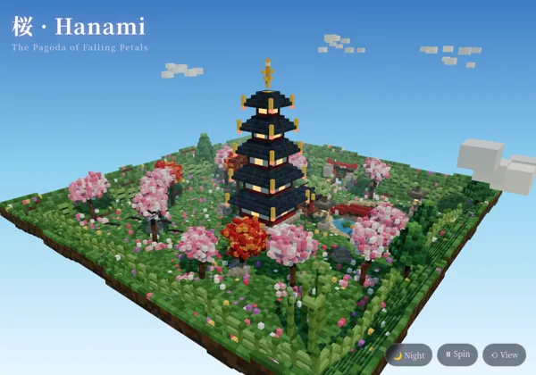

We build Kyojin, an open-source engine that runs the largest open models on one mini PC or a single graphics card, about 2× faster than llama.cpp. And we put AI to work in real businesses.Nous développons Kyojin, un moteur open source qui fait tourner les plus grands modèles ouverts sur un mini PC ou une seule carte graphique, environ 2× plus vite que llama.cpp. Et nous mettons l'IA au travail dans de vraies entreprises.

One AMD mini PC with 128 GB. A real document read as a growing prompt, from 8,000 to 500,000 tokens: speed barely drops. Every figure links to its source.Un mini PC AMD avec 128 Go. Un vrai document lu comme un prompt qui grandit, de 8 000 à 500 000 tokens : la vitesse baisse à peine. Chaque chiffre renvoie à sa source.
Kyojin 1.5.10, 17 Oct 2026, on a Ryzen AI Max+ 395: published packs, greedy, speculative decoding. Both models recalled two facts hidden at 40 % and 85 % of a ~500K-token prompt. Method and full tables: doc/benchmarks.md.Kyojin 1.5.10, 17/10/2026, sur un Ryzen AI Max+ 395 : packs publiés, greedy, décodage spéculatif. Les deux modèles retrouvent deux faits cachés à 40 % et 85 % d'un prompt d'environ 500K tokens. Méthode et tableaux : doc/benchmarks.md.
Same sources, a CUDA path with hand-written kernels. On one RTX 3090 with Qwen3.8-27B, Kyojin keeps its speed as the context grows; llama.cpp slows down.Les mêmes sources, avec un chemin CUDA et des kernels écrits à la main. Sur une RTX 3090 avec Qwen3.8-27B, Kyojin garde sa vitesse quand le contexte grandit ; llama.cpp ralentit.
Same card, same prompts, greedy, one user. llama.cpp reads the prompt 8 to 19 % faster in this run. Weights differ (EXL3 against GGUF), so quality is not compared.Même carte, mêmes prompts, greedy, un utilisateur. llama.cpp lit le prompt 8 à 19 % plus vite dans cette mesure. Les poids diffèrent (EXL3 contre GGUF) : la qualité n'est pas comparée.
Our packs pick the same next word as the official model 94 % of the time (Qwen) and 90 % (GLM).Nos packs choisissent le même mot suivant que le modèle officiel dans 94 % des cas (Qwen) et 90 % (GLM).
Speculative decoding drafts several tokens and checks them in one pass: up to 73 tokens per second on code.Le décodage spéculatif propose plusieurs tokens et les vérifie en une passe : jusqu'à 73 tokens par seconde sur du code.
Custom GPU code for AMD (ROCm) and NVIDIA (CUDA). Speaks the OpenAI API, so your tools work as they are.Du code GPU sur mesure pour AMD (ROCm) et NVIDIA (CUDA). Compatible avec l'API OpenAI : vos outils marchent tels quels.
Our own compressed builds. All but the experimental DeepSeek fit in 128 GB with room for long context.Nos propres versions compressées. Toutes, sauf DeepSeek (expérimental), tiennent dans 128 Go avec de la place pour un long contexte.
| ModelModèle | Reading, tok/sLecture, tok/s | Writing, tok/sÉcriture, tok/s | |
|---|---|---|---|
| Qwen3.8-Flash-Next | 1621 | 47 – 73 | HF → |
| GLM-5.3-Flash | 652 | 27 – 37 | HF → |
| MiMo-V2.6-Flash1.5 | 760 | 29 – 37 | HF → |
| DeepSeek-V4.1-Flashexperimentalexpérimental | 187 – 257 | 5 – 11 | HF → |
One Ryzen AI Max+ 395 with 128 GB, 8K-token prompt. Writing ranges cover prose, chat and code with speculative decoding (DeepSeek: plain decoding on real sessions). DeepSeek is larger than memory: Kyojin reads part of the model from the SSD, exactly, so it is a demonstration rather than a daily assistant (how it works).Un Ryzen AI Max+ 395 avec 128 Go, prompt de 8K tokens. Les plages d'écriture couvrent prose, chat et code avec décodage spéculatif (DeepSeek : décodage simple sur de vraies sessions). DeepSeek est plus gros que la mémoire : Kyojin lit une partie du modèle depuis le SSD, à l'identique. C'est une démonstration plutôt qu'un assistant du quotidien (comment ça marche).
An online store for truck tyres and services. Its AI agent does real work: it searches the catalogue, tracks orders, fills the cart and books a callback. Few online stores have one.Un site marchand de pneus poids lourd et de services. Son agent IA fait un vrai travail : il cherche dans le catalogue, suit les commandes, remplit le panier et programme un rappel. Peu de sites marchands en ont un.
Recorded on the live site. Waiting time sped up.Filmé sur le site en ligne. Attente accélérée.
Our code is in llama.cpp, the reference library for local AI: support for NVIDIA's Nemotron-3 models, reviewed and merged by the maintainers.Notre code est dans llama.cpp, la bibliothèque de référence de l'IA locale : le support des modèles Nemotron-3 de NVIDIA, relu et fusionné par les mainteneurs.
New models from Tencent, Xiaomi and NVIDIA, converted so they run locally, often days after release. Published on Hugging Face.De nouveaux modèles de Tencent, Xiaomi et NVIDIA, convertis pour tourner en local. Publiés sur Hugging Face.
Setup, tuning and before/after numbers, from one card to a rack: RTX, DGX Spark, AMD.Installation, réglage et mesures avant/après, d'une carte à une baie : RTX, DGX Spark, AMD.
In-house models instead of subscriptions. Your data stays inside your company.Des modèles internes au lieu d'abonnements. Vos données restent dans l'entreprise.
Agents and background jobs, as at GETA: quotes, reminders, invoices, customer support.Agents et tâches automatiques, comme chez GETA : devis, relances, factures, support client.
Install torch for your GPU and build once (doc/install.md), then:Installez torch pour votre GPU et compilez une fois (doc/install.md), puis :
$ git clone https://github.com/Yamz-Labs/kyojin && cd kyojin $ hf download yamz-labs/Qwen3.8-Flash-Next-EXL3-Yamz --local-dir ./qwen-pack $ python tools/qwen/serve.py --model ./qwen-pack --port 8000 -c 131072 # OpenAI API on http://localhost:8000/v1
Yamz Labs is run by Yaniss Amazouz, AI engineer from Télécom SudParis (IP Paris), based in Essonne. Kyojin, our models and the GETA platform are built here, with a 24/7 lab of AI agents that code, test and measure.Yamz Labs est dirigé par Yaniss Amazouz, ingénieur IA diplômé de Télécom SudParis (IP Paris), basé dans l'Essonne. Kyojin, nos modèles et la plateforme GETA sont construits ici, avec un labo d'agents IA qui codent, testent et mesurent 24 h/24.
A project, a GPU park to put to work, or a question about Kyojin. Un projet, un parc de GPU à mettre au travail ou une question sur Kyojin.